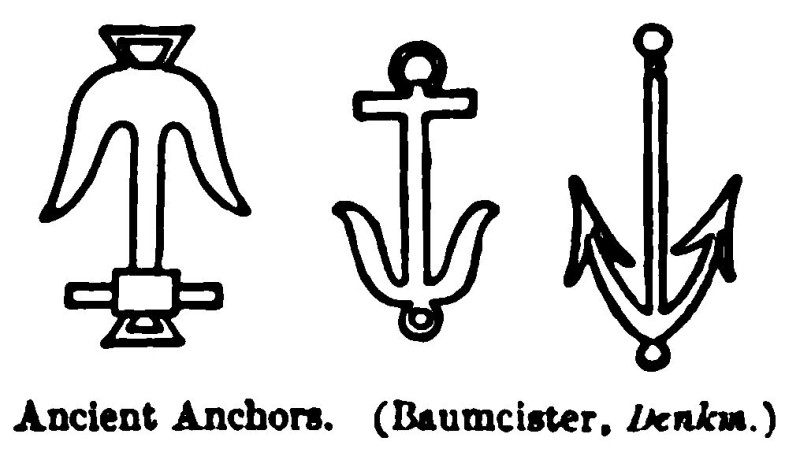
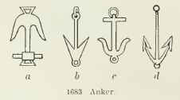
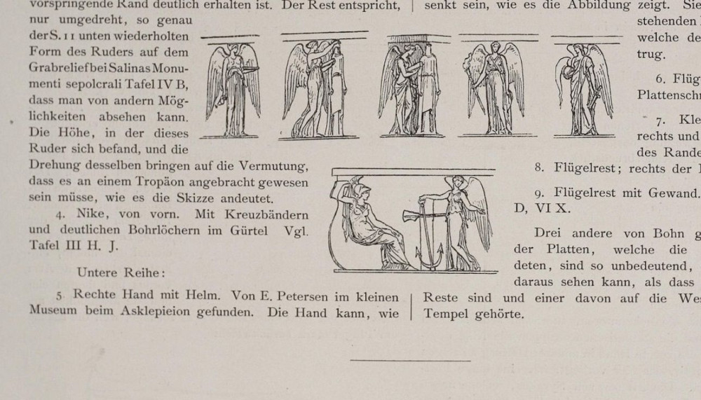
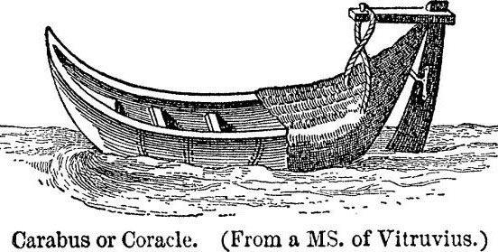
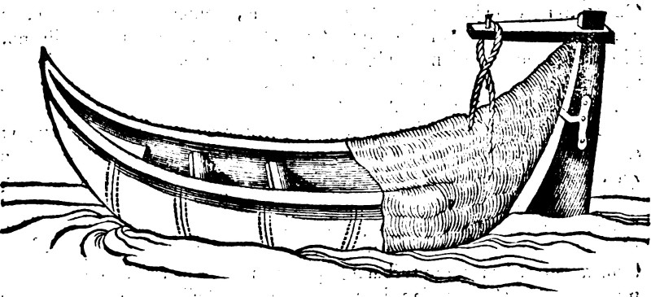
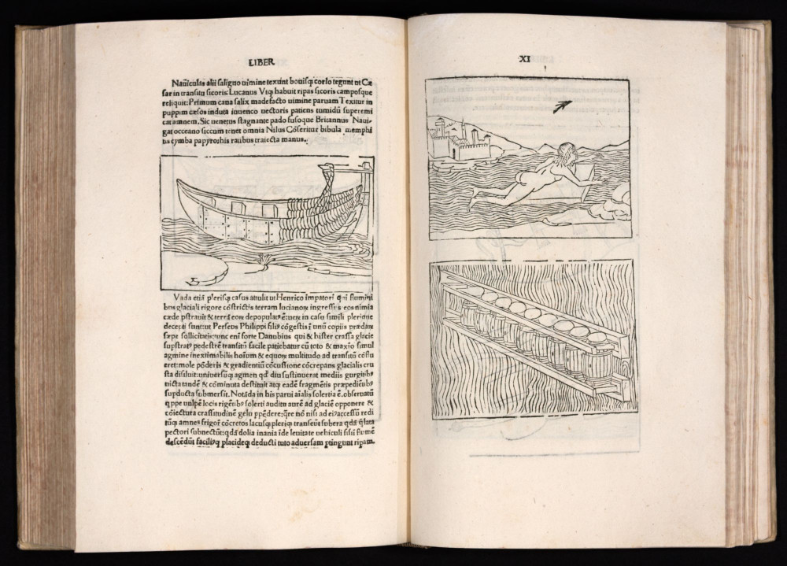
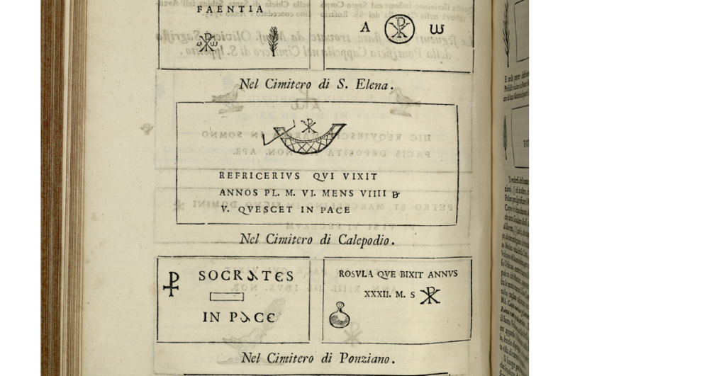

В прошлый раз мы показали, к каким казусам может приводить несвоевременное внесение корректировки в словари. Но не только нерадивые издатели виноваты в тех нелепостях, которые порой проникают в нашу литературу, освещающую вопросы военно-морской истории. Иногда и сами уважаемые авторы вовлекают читателя в пучину заблуждений и ошибок. Допустив вольно или невольно ошибку в изложении того или иного факта, авторитетный автор порождает шлейф таких ошибок у своих последователей и эпигонов. И вот уже ошибочное утверждение становится господствующим, широко распространенным, стандартным. Приведем несколько примеров.
Всем известен авторитет словаря Уильяма Смита Dictionary of Greek and Roman Antiquities, впервые увидевшего свет в 1842 году. В третьем и последнем его издании (в двух томах, 1890-1891) находится рисунок с изображением старинных якорей:

Крайним справа на рисунке показан якорь без штока. В тексте мы находим
The anchors were furnished with flukes (ἄγκιστρα), and from the representations it is clear that in most cases they had stocks and crowns.
Якоря были снабжены лапами, а из рисунка ясно, что в большинстве случаев у них имелись штоки и тренды.
(Crown - узел крепления рогов якоря к веретену, тренд. Нижняя часть его называлась пяткой. К ней крепился рым. Видимо, его и имел в виду автор статьи)
В подписи к рисунку дана ссылка на источник: Baumeister, Denkm. Действительно, в томе III, на странице 1614 книги Baumeister, August (1887) Denkmäler des klassischen Altertums, zur Erläuterung des Lebens der Griechen und Römer in Religion, Kunst und Sitte, имеется рисунок под номером 1683

на котором последним в ряду изображен как раз тот самый якорь без штока. В сопроводительном тексте читаем
auf den Reliefs der Balustrade der Athena Nike (Abb. 1683 d nach Kekulé)
Т.е., изображение якоря взято, как сообщается, с барельефа на балюстраде храма Ники Аптерос (бескрылой победы) на афинском Акрополе.
Не будем останавливаться на этом, а обратимся к книге Kekulé. Там на странице 12 среди нескольких эскизов мы видим изображение того самого якоря.

Радость? Как бы не так. Обратившись к тексту, устанавливаем, что эти эскизы отнесены к категории Ergänzungsskizzen, «дополнительных эскизов», которые предложены автором для того, чтобы заместить утраченные фрагменты балюстрады. Среди же сохранившихся фрагментов балюстрады изображений какого-либо якоря вообще нет. Т.е. автором этого «античного» якоря без штока является скромный немецкий археолог XIX века Рейнгард Кекуле и включать его изображение в список античных артефактов никаких оснований нет. А ведь какие авторитеты утверждали это!
Еще один пример. В данном случае на крючок попался и автор этого блога. В моем рассказе Carabus vs κάραβος имеется такой пассаж.
В огромной толковой энциклопедии («Этимологии, или Начала») Исидор знакомил своих современников с историей, географией, космологией, антропологией, теологией, грамматикой в форме терминологических исследований, разъясняющих смысл и содержание главнейших понятий, которыми оперировал средневековый человек. Серьезных комментированных переводов «Начал» Исидора на современные европейские языки нет. Причину такого положения дел объяснил Э. Брео в своей фундаментальной работе (Ernest Brehaut, An Encyclopedist of the Dark Ages Isidore of Seville, Columbia University, New York: 1912). Латынь Исидора, хотя и не деградировала до такой степени, как у Григория Турского, однако уже значительно искажена, краткость доведена до абсурда. Переведены лишь отдельные фрагменты этого труда. К сожалению, в число этих фрагментов не попала интересующая нас Книга XIX “De navibus , aedificiis et vestibus”. («О кораблях, сооружениях и одежде»). Но мы не будет делать ее полный перевод В данном случае нас интересует лишь одно предложение из этой книги:
Carabus parva scapha ex vimine facta, quæ contecta crudo coreo genus navigii præbet.
Карабус – тип судна, имеющего небольшие размеры; сделан из ивняка и обтянут сыромятной кожей.
(Isidor. Orig. xix, 1, 26)
В отличие от своего греческого тезки, у латинского carabus’а имеется даже изображение. Оно сохранилось в одном из манускриптов Витрувия и практически в таком же виде найдено на мраморном надгробии (изображение которого имеется в книге M. A. Boldetti, Osservazioni sopra i cimiteri dei santi martiri, ed antichi cristiani di Roma, etc., Rome, 1720.)
Изображение carabus’а взято также из словаря Смита (т.1, 1890, стр.361):

Смит ссылается при этом на известные работы авторитетных авторов Rich и Saglio. Те, в свою очередь, относят публикацию изображения к трактату немецко-шведского гуманиста Иоганна Шеффера (1654) (Joannis Schefferi Argentoratensis, De militia navali veterum libri quatuor. Ad historiam græcam latinamque vtiles), который якобы взял это изображение из манускрипта Витрувия.
У Шеффера действительно есть это изображение

Но Шеффер на стр.81 трактата сообщает, что взял изображение из манускрипта Вегеция, а не Витрувия:
Figuram coriacei ejusmodi celocis, vel carabi hanc reperi in Мs quodam codice Vegetii.
На самом деле это изображение взято не из манускрипта Витрувия, не из манускрипта Вегеция, вообще не из какого манускрипта. Издание сочинения Вегеция De Re Militari было осуществлено в Париже в августе 1532 года. Торр сообщает нам, что приблизительно в это же время (в июле?) был напечатан трактат итальянского инженера, технического советника при дворе Римини, Роберто Вальтурио (1405–1475) под тем же названием (De Re Militari, «О военном искусстве») и в той же типографии, что и работа Вегеция. Так как оба напечатанных сочинения имели одинаковый формат, было принято решение в целях экономии сделать для них общий переплет. Шеффер взял рисунок из работы Вальтурио, которая была написана между 1455 и 1460 гг. и опубликована, как мы видели, в середине XVI века

Относить это изображение к античным артефактам, конечно же, не стоит.
Что касается изображения из книги M. A. Boldetti, Osservazioni sopra i cimiteri dei santi martiri, ed antichi cristiani di Roma, etc., Rome, 1720, то изображение плетеного карабуса там присутствует, но совсем в другом виде

Чтобы не заканчивать пост на такой пессимистичной ноте, заметим, что плетеные из прутьев и обшитые шкурами суда вне всякого сомнения существовали в античные времена. Свидетельством тому является вот этот отрывок из Марка Аннея Лукана (39-65 гг.):
Только вошел Сикор в берега, и поля пообсохли,
Тотчас же ивы седой сплетают мокрые прутья
В малую лодку - и челн, обтянутый бычьею кожей,
Мчится по бурной реке, подчиняясь кормчего воле.
так проплывает венет по Паду или британец
По океанским волнам; так в месяцы ннльских разливов
Легкий Мемфисский челнок скользит сквозь папирус болотный
Марк Анней ЛУКАН Фарсалия. ПЕРЕВОД Л.Е.ОСТРОУМОВА
Хотя к этому переводу есть серьезные претензии, но не будем все о грустном да о грустном. До следующего раза.
ЗЫ. Да, конечно же, за допущенные в блоге ошибки я приношу читателям извинения.